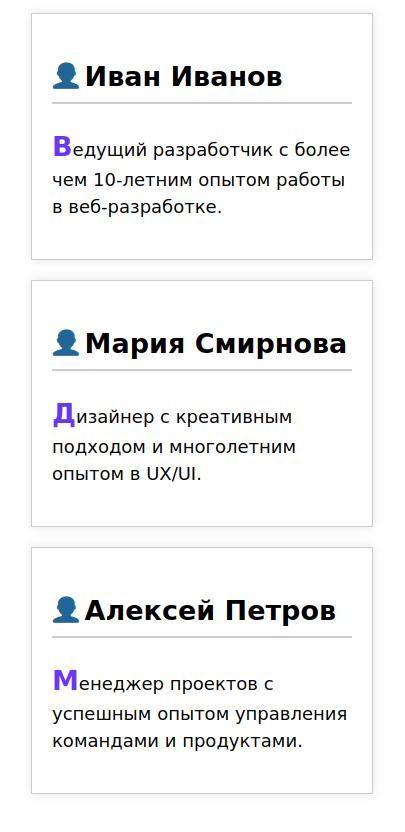

В этом задании вам предстоит создать стили для карточек профилей с использованием псевдоэлементов. Вам нужно будет добавить иконку перед именем пользователя, декоративный элемент после имени и стилизовать первую букву описания профиля.
pseudo-elements.css
Используйте псевдоэлементы для стилизации карточек профилей.
-
Перед именем пользователя должна отображаться иконка "
👤" с отступом справа5px. Вы можете скопировать иконку из этого текста. -
После имени пользователя должна отображаться горизонтальная линия цвета
#ccc, высотой 2px и с отступом сверху5px. -
Первая буква описания профиля должна быть цвета
#6936f4, увеличена в1.5раза и жирная.
